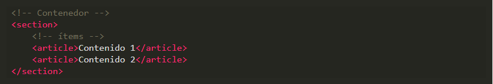

Flex es uno de los nuevos valores HTML5 para propiedad CSS display, que nos permite maquinar nuestras páginas web de una manera mucho más fácil de lo que se hacía con la forma tradicional, en la que utilizábamos propiedades como float o position, entre otras.
¿Por qué Flex?
Se llama Flex porque tenemos un contenedor, llamado contenedor Flex, que es el elemento que contiene la propiedad display: flex.
Desde ese contenedor vamos a poder especificar la alineación de los elementos que hay dentro, el tamaño de los elementos que contienen y distribuir el espacio restante que hay entre los elementos del contenedor Flex, y todo esto en una sola dirección, ya sea una horizontal o vertical. Es decir, podemos distribuir los elementos que contiene la etiqueta sin poner nada dentro de estos elementos.
¿Que podemos hacer con Flexbox?
Conceptos Básicos
Los elementos básicos de Flexbox son:

1.Contenedor. Existe un elemento padre que es el contenedor, ya que tendrá en su interior cada uno de los ítems flexibles y adaptables.
2.ítem. Cada uno de los hijos flexibles que tendrá el contenedor en su interior.
Viendo esto en código sería de la siguiente forma.

Para volver a dicho contenedor un contenedor flexible habrá que modificar su valor display por defecto.